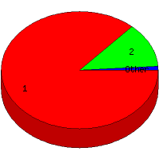

Week of 5/30/2010 to 6/5/2010: Top
3 of
3 File Types (Extensions)
Sorted by Access Count
Individual file types as determined by file extensions. All URLs that
do not contain an extension are counted as directories.

| Rank |
Type |
Accesses |
% |
Bytes |
% |
| 1 |
html
|
286 |
86.67 |
6,819,339 |
96.96 |
| 2 |
Directory (folder)
|
41 |
12.42 |
209,864 |
2.98 |
| 3 |
ico
|
3 |
0.91 |
4,218 |
0.06 |